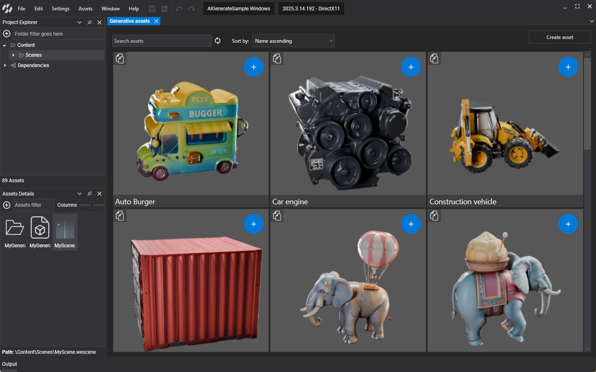
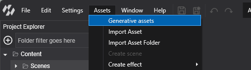
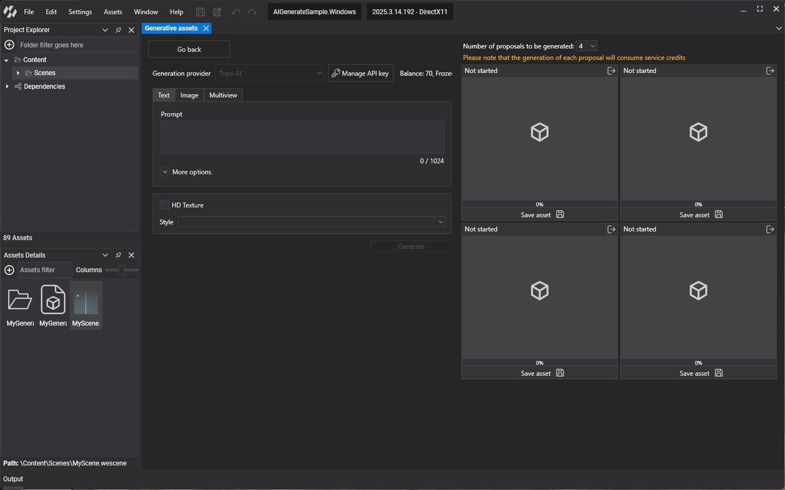
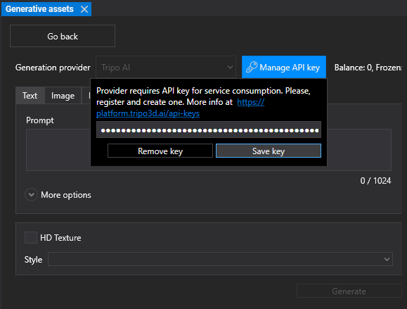
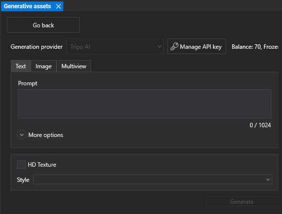
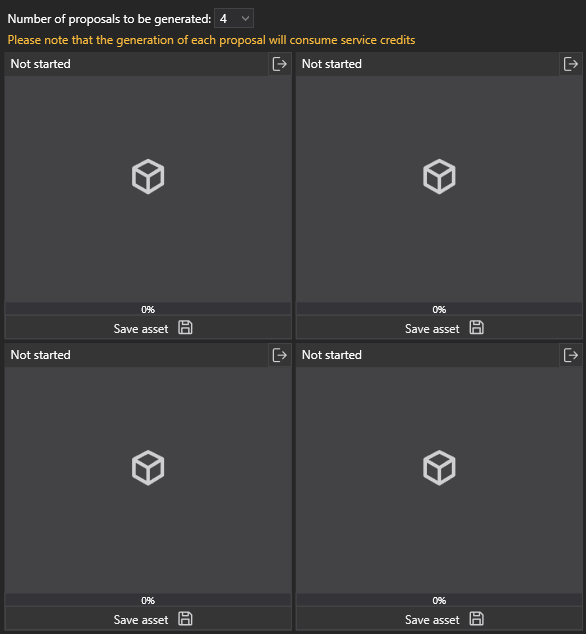

Generate AI-Driven Assets

Evergine Studio can create 3D models with generative AI and add them to your project as regular Model assets. You describe the model with a text prompt, a reference image, or several pictures of the same object, and the generation service returns textured models you can preview, save to a personal gallery, and use in your scenes.
The current generation provider is Tripo AI. Generating models requires a Tripo AI account and API key, and each generation consumes credits from that account.
Open the generative assets view
Select Assets > Generative assets in the main menu. The item is also available from the  button and the context menu of the Assets Details panel. The view opens as a new tab.
button and the context menu of the Assets Details panel. The view opens as a new tab.

Gallery
The view starts on the gallery, which lists the models you saved on this computer.
- Use Search assets and Sort by (name or creation date, ascending or descending) at the top to find a model.
- The button at the top left of a card reuses its prompt: it opens the generation view with the same text or images filled in.
- The + button at the top right of a card copies the model into the folder currently selected in the Assets Details panel.
- Right-click a card to rename or remove it.
Click Create asset to open the generation view.
Generate a model

Set up the API key
- Create an API key on the Tripo AI platform.
- In the generation view, click Manage API key.
- Paste the key and click Save key. Remove key removes the stored key.

Once the key is valid, the view shows the balance of your Tripo AI account next to the button, so you can check the available credits before you generate.
Choose the input

Pick the model version in the Models list, then choose one of the three input tabs:
| Tab | Input |
|---|---|
| Text | A Prompt that describes the model. Open More options to add a Negative prompt with features the model must not have. |
| Image | One reference image (.jpg, .jpeg or .png). Drop it on the area or click Select image. |
| Multiview | Up to four pictures of the same object: a front image, plus optional left, back and right images. |
Additional options
- HD Texture requests detailed textures. It is available with the three inputs.
- Style applies a preset look, such as Cartoon, Clay, SteamPunk, Alien, Barbie, Christmas, Gold or Bronze.
Generate several proposals

Number of proposals to be generated lets you ask for 1, 2 or 4 models from the same input. Evergine Studio runs them in parallel, and each proposal shows its own status and progress (Not started, Queued, In progress, Finished or Failed).
Important
Each proposal is a separate generation and consumes its own credits. Four proposals cost four times as much as one.
If the service rejects a request, Evergine Studio shows the reason: an invalid API key, a rate limit, exhausted credits, or a prompt that the content policy does not allow.
Save a model
Click Save asset under a finished proposal and enter a name. You can save the model in the gallery, in the project, or both. Saving in the project copies the model into the folder selected in the Assets Details panel, where it becomes a regular Model asset that you can drag into a scene.